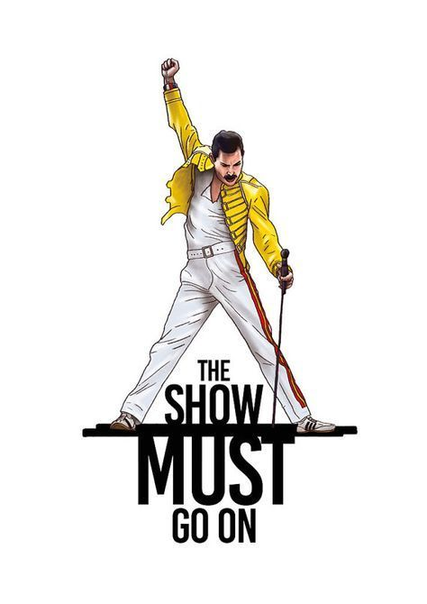
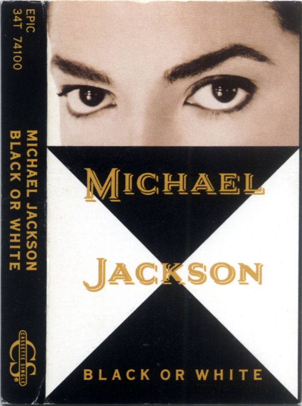
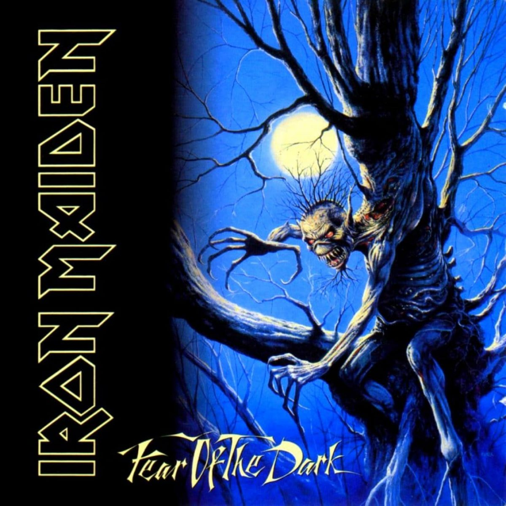

INICIO
ARTISTAS
PLAYLIST
GÉNEROS
ÁLBUMES
CANCIONES
Ponele play a la Jukebox digital, Y DISFRUTA!
Lo retro llego para quedarse
ARTISTAS DE LOS 80
DISCOS INDISPENSABLES DE LOS 80
Thriller
Michael Jackson
1984
Van Halen
Purple Rain
Prince
Like a Virgin
Madonna
Faith
George Michael
LO MEJOR DE LOS 90!
Enjoy The Silence
Depeche Mode
Violator

The Show Must Go On
Queen
Innuendo

Black Or White
Michael Jackson
Dangerous
Style
Prince
Emancipation

Fear Of The Dark
Iron Maiden
Fear of the dark